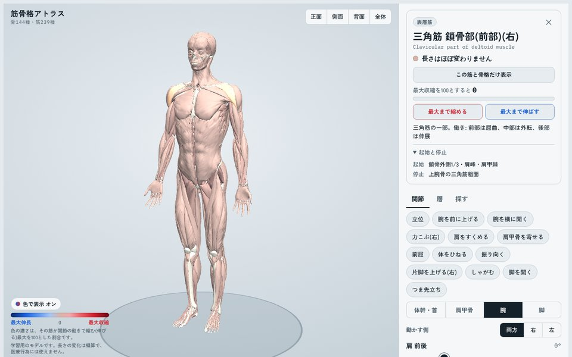
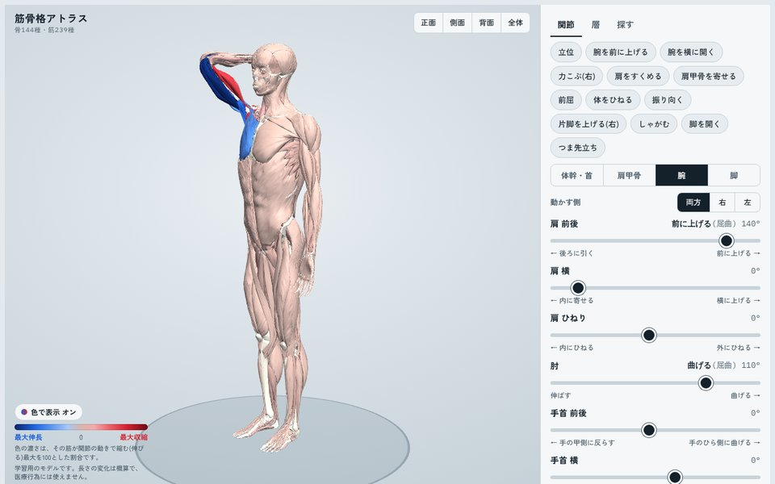
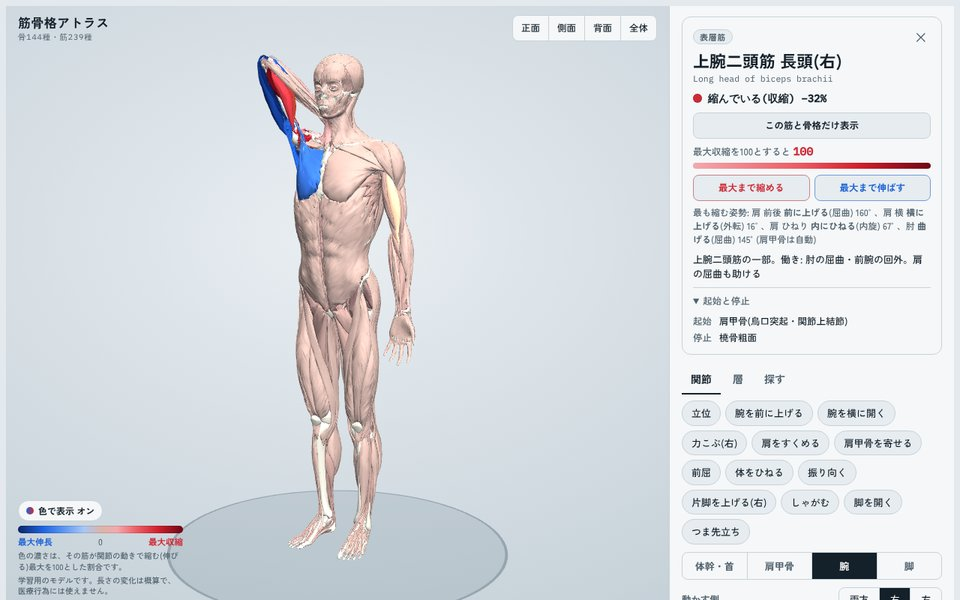
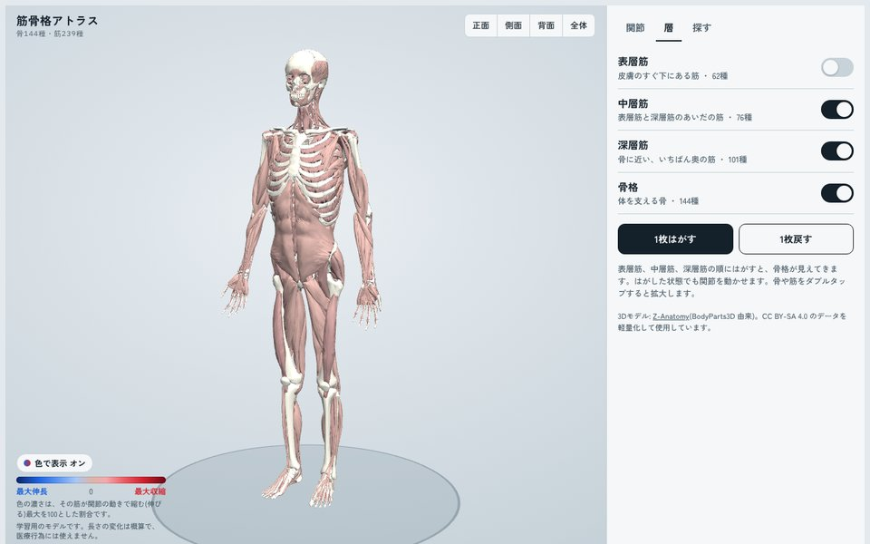
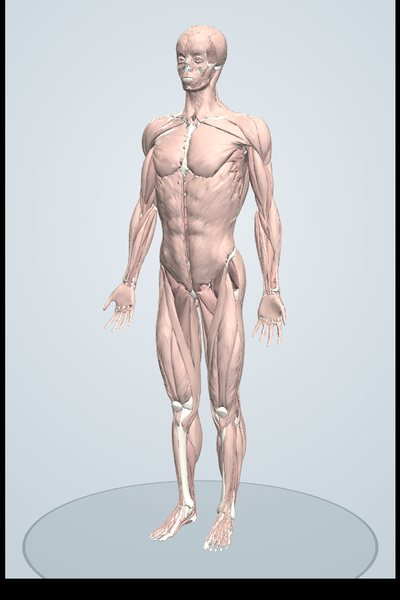
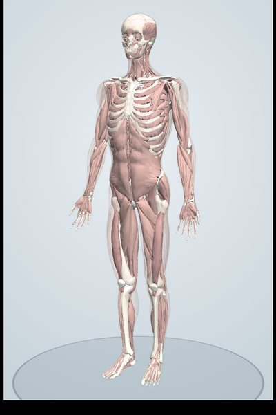
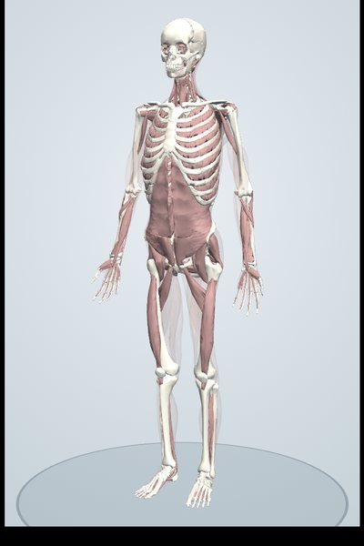
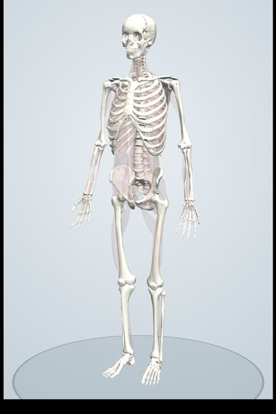

筋骨格アトラス / 3D Anatomy
関節を動かすと、
筋肉が縮むのも伸びるのも見える。
筋骨格アトラスは、実際の人体データから作った3Dモデルで骨と筋肉を学べる解剖アトラスです。タップで名前、層ごとにはがして深部へ、関節を動かせば筋の伸び縮みが色でわかります。インストール不要、ブラウザだけで使えます。
- 239筋
- 144骨
- 20関節の動き
- 28種目の図鑑
Features
筋骨格アトラスでできること
教科書の図では分かりにくい「立体の位置関係」と「動いたときにどの筋が働くか」を、自分の手で動かして確かめられます。

タップで名前と起始・停止
骨や筋をタップすると和名と英名、左右、起始・停止・働きが表示されます。名前で検索してその部位へ移動したり、選んだ筋と骨格だけを表示したりもできます。

関節を動かすと、伸び縮みが色でわかる
体幹・首・肩甲骨・肩・肘・手首・股関節・膝・足首の20項目を左右別に動かせます。縮む筋は赤、伸びる筋は青。肩甲上腕リズムも再現しています。

「最大まで縮める」で、その筋の役割がわかる
選んだ筋が最も縮む姿勢・最も伸びる姿勢を自動で探して再現します。ストレッチの向きや、筋がどの動きで働くかを確かめるのに便利です。
トレーニング図鑑: 重りの向きまで考えて、働く筋を表示
スクワット、懸垂、ベンチプレスなど28種目の動きを再生し、重りや体重がどの向きにかかるかから、どの筋がどれだけ働くかを赤の濃さで表示します。重さを変えたり、動きの途中で止めたりもできます。トレーニング図鑑を開く → 種目ごとの解説 →

表層から深層へ、1枚ずつはがす
筋肉は、皮膚に近い順に「表層筋」「中層筋」「深層筋」の3つの層に分けてあります。「1枚はがす」を押すたびに外側の層が消えて、その下に隠れていた筋が見えてきます。最後は骨格だけになります。
はがす順番

1. 表層筋皮膚のすぐ下。大胸筋・三角筋・広背筋・大殿筋 など
2. 中層筋表層をはがすと見える。上腕筋・菱形筋・前鋸筋・中殿筋 など
3. 深層筋骨にいちばん近い。腸骨筋・小殿筋・多裂筋・肋間筋 など
4. 骨格筋をすべてはがすと骨だけになる
For
こんな方に
解剖学を学ぶ学生
医療・看護・リハビリ・スポーツ系の授業や国家試験の勉強に。起始・停止と働きを立体で結びつけて覚えられます。
トレーナー・セラピスト
お客さまへの説明に。「この動きでこの筋が縮む」を画面で見せられます。
筋トレ・ストレッチをする人
いま鍛えている筋、伸ばしている筋がどこにあるのかを確かめられます。
Contents
コンテンツ
筋骨格アトラスでは、体のしくみを動かして学べるコンテンツを順次公開していきます。